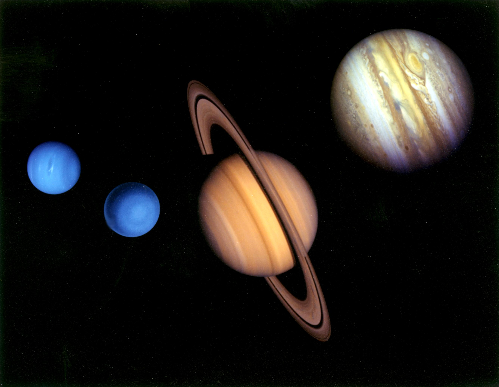

Plynní obři
Zpět

Jupiter
- největší planeta sluneční soustavy – obrovský plynný obr
- má více než 90 měsíců
- atmosféra z vodíku a helia, s obří bouří zvanou Velká rudá skvrna
Saturn
- známý svými prstenci – tvořeny ledem, prachem a kamínky
- Má přes 80 měsíců, největší Titan má hustou atmosféru
Uran
- ledový obr, složený z ledu, vody, čpavku a metanu
- má modrozelenou barvu kvůli metanu v atmosféře
- má 13 prstenců a 27 známých měsíců
Neptun
- nejvzdálenější planeta od Slunce
- silný vítr – až 2 100 km/h, nejrychlejší v celé soustavě
- atmosféra obsahuje vodík, helium a metan